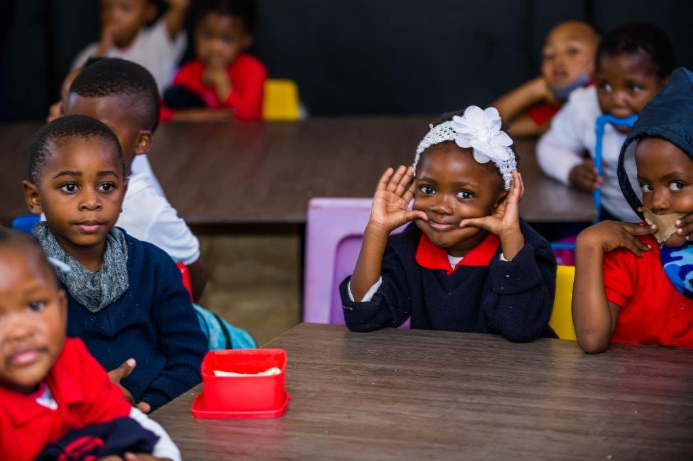
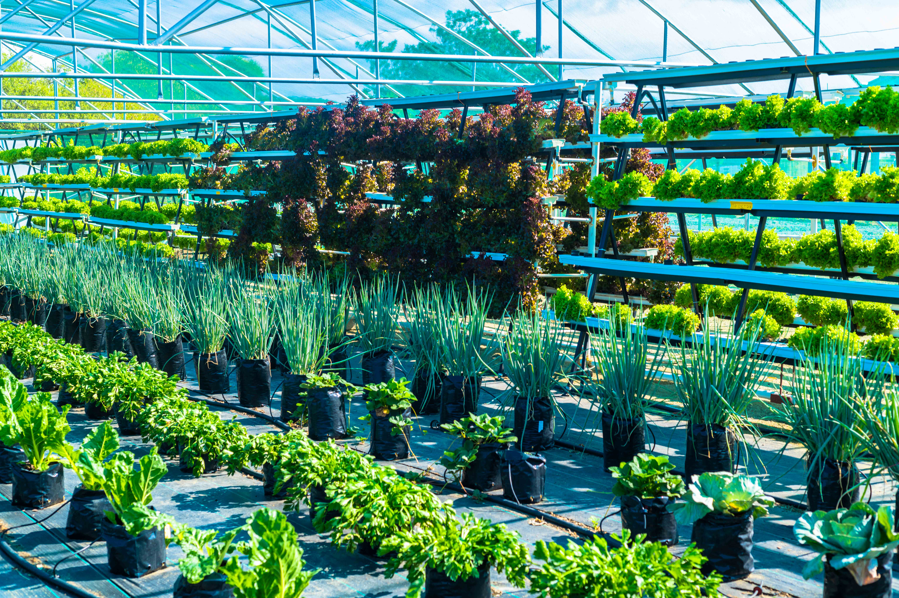
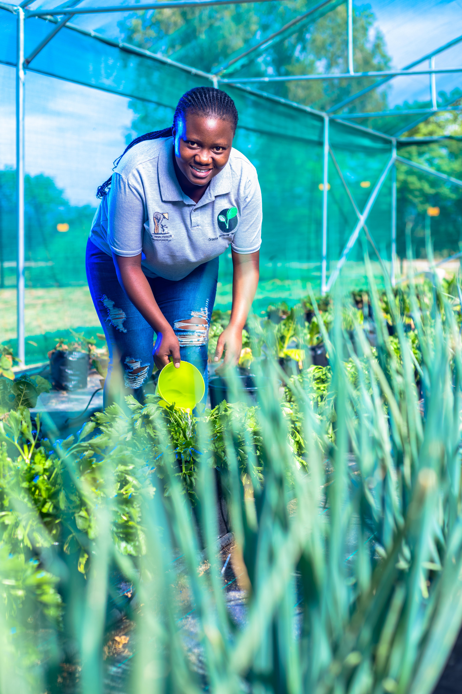
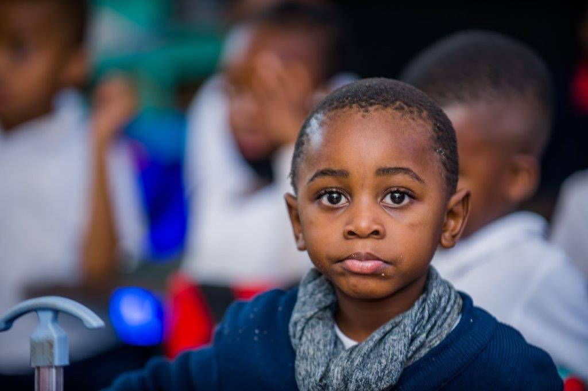
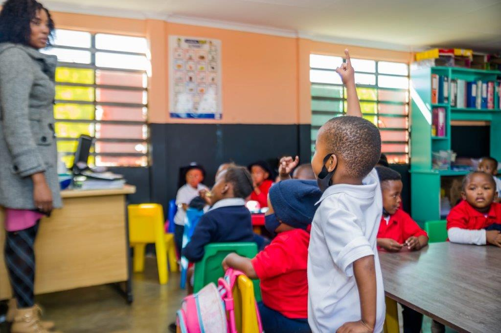
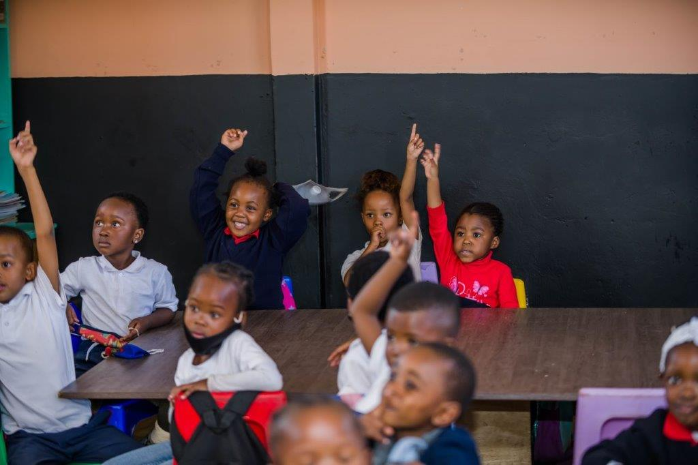
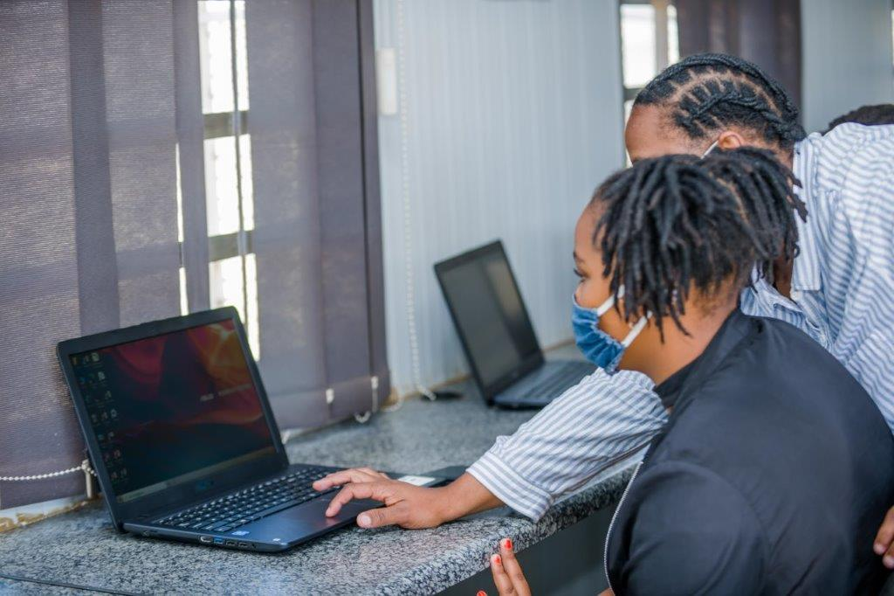
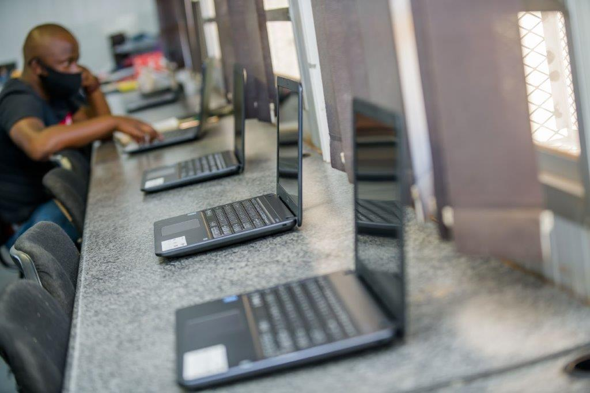

Courage to Care
Our corporate social investment is central to our commitment to giving back to those in need in a meaningful and impactful way.
An Integral Part of Who We Are
We firmly believe that being a true leader goes beyond simply providing employment and sharing profit.
That’s why everything we do is aimed at making a real difference in the lives of South Africa and her people. This is depicted in the active role we continue to play in all our communities, in our country and in how we drive South Africa’s growth.

Siyanda Nutrition Centres
These nutrition centres offer three hot meals to orphans and neglected children, thanks to volunteers who, despite being unemployed, generously give their time. The children also receive basic living essentials like books, clothing, toiletries, and counselling, as well as help with obtaining birth certificates.
Centres
KwaZulu-Natal (KZN)
Our five nutrition centres and five soup kitchens in KZN serve 1,178 beneficiaries, not including their families.
Northwest Province
Our nine nutrition centres support 911 beneficiaries and provide tertiary education assistance to 46 students.
Natural Disaster – 2022 KZN Floods
Siyanda Resources provided 5,000 blankets and fed over 4,500 people through soup kitchens, distributed food parcels to 40 families in Richards Bay and 95 families in Jozini, and supported blanket donations in Hammersdale and Dassenhoek.
Siyanda Basic Education Support Initiatives
“Education is the most powerful weapon which you can use to change the world.” – Nelson Mandela
Siyanda Resources is committed to adopting and equipping schools with advanced computer centres. Additionally, we will sponsor and support extra classes on weekends and holidays, as well as provide various study materials to foster a culture of learning and academic excellence.




Siyanda Bursaries
We provide fully-funded tertiary education bursaries to qualifying students who want to study engineering-related degrees or diplomas.
For the latest bursaries, use the links below.

